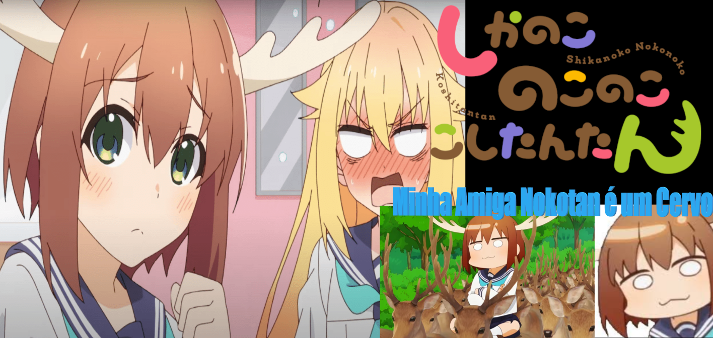

Simplesmente a melhor híbrida de todas né? Uma Garota Cervo extremamente fofa e engraçada

Simplesmente a melhor híbrida de todas né? Uma Garota Cervo extremamente fofa e engraçada
Nokotan é uma personagem muito carismática e única. Ela é uma híbrida de humano e cervo, o que a torna bastante especial e diferente dos outros personagens. Nokotan tem uma personalidade gentil e amigável, sempre disposta a ajudar seus amigos e a resolver problemas de maneira criativa. A história do anime se passa principalmente na Escola Secundária Hino Minami, onde Nokotan fundou o Clube dos Cervos. Este clube é um lugar onde os membros podem aprender mais sobre cervos e a natureza, além de participar de várias atividades divertidas e educativas.
Torako Koshi, a protagonista humana, é uma estudante comum até encontrar Nokotan. Esse encontro muda sua vida, levando-a a se envolver em várias aventuras e situações cômicas. A amizade entre Torako e Nokotan é um dos pontos centrais da série, mostrando como a aceitação das diferenças pode levar a uma amizade forte e duradoura.
Aqui está a melhor amiga de Shikanoko, a Torako Koshi!!!“My Deer Friend Nokotan” (ou “Shikanoko Nokonoko Koshitantan”) é um anime que mistura comédia, fantasia e slice of life. A história segue Torako Koshi, uma estudante do ensino médio que, um dia, encontra Nokotan, uma híbrida de humano e cervo, presa em fios de energia. Nokotan é a fundadora do Clube dos Cervos na Escola Secundária Hino Minami. Após resgatar Nokotan, Torako se vê envolvida em várias aventuras e situações engraçadas, enquanto aprende mais sobre a natureza e a vida dos cervos. A amizade entre Torako e Nokotan é o coração da série, mostrando como a aceitação das diferenças pode levar a uma amizade forte e duradoura. O anime é conhecido por suas situações cômicas, personagens carismáticos e mensagens positivas sobre amizade e aceitação. Cada episódio traz novas atividades e desafios para o Clube dos Cervos, proporcionando momentos divertidos e emocionantes para os espectadores.